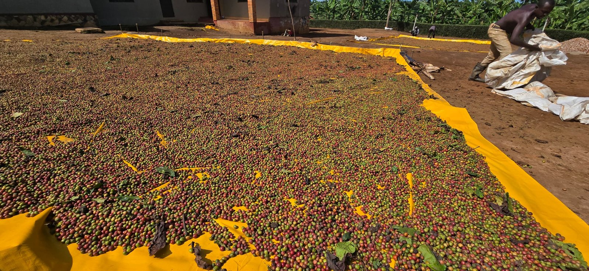

Sourcing & financing
We source, finance, process and export Arabica and Robusta from Uganda’s major coffee-growing areas. Our network connects us with thousands of farmers, cooperative groups, associations and farmer groups.
Trade process
Sourcing, logistics and quality control connect Uganda’s coffee producers with our customers. Our team works across sourcing, export processing, handling and delivery.

What we do
We source, finance, process and export Arabica and Robusta from Uganda’s major coffee-growing areas. Our network connects us with thousands of farmers, cooperative groups, associations and farmer groups.
Before export, coffee is stacked, inspected and fumigated. Most exports are shipped in 60 kg jute bags, with bulk shipping available on request. Containers are carefully cleaned, lined and loaded.
Our team focuses on quality control, sourcing, export processing and logistics, working to benefit producers and deliver quality coffee to customers on time.
Warehouses and storage facilities help preserve coffee quality, maintain supply and fulfil export orders.
Send the essentials to Nkoma’s Kampala trade desk.
Start an enquiry ↗